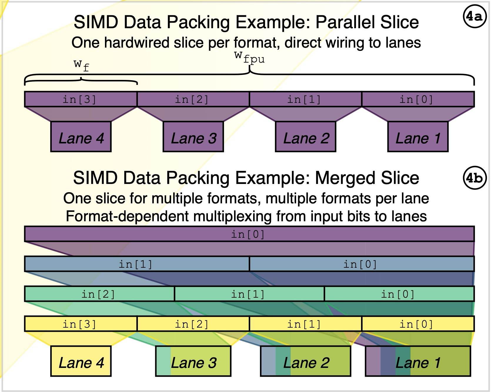

FPnew 使用规范
1. 概述
FPnew 是一个开源的、高度可配置的跨精度浮点单元，支持多种标准与非标准浮点格式，并具备标量与向量运算能力，实现精度与能耗之间的动态权衡。
FPnew 采用 SystemVerilog 编写，遵循 IEEE 754-2008 标准，支持多种浮点格式、多格式融合乘加、转换与打包操作等，具备高度可配置的流水线结构。
FPnew 的架构分为四个主要功能块，每个块处理一类指令：
- ADDMUL：融合乘加 (a*b)+c 、加法(a=1)、乘法(c=0)
- DIVSQRT：除法、平方根（迭代实现）
- COMP：比较、分类、位操作
- CONV：格式转换（FP↔FP、FP↔整数）
每个功能块可配置为并行或合并格式切片，支持不同精度的独立或共享数据通路。

FPnew 通过 SystemVerilog 参数进行配置，其中支持的浮点格式包括： - FP64 (11,52) - FP32 (8,23) - FP16 (5,10) - BF16 (8,7) - FP8 (5,2)
2. 配置与端口
2.1 关键配置参数
FPU_FEATURES
| 配置项 | 描述 |
|---|---|
| Width | 数据路径的宽度（通常与 ISA XLEN 对应） |
| EnableVectors | 是否启用向量模式（SIMD 格式切片） |
| EnableNanBox | 是否启用 NaN Boxing（高位填 1） |
| FpFmtMask[4:0] | 允许启用的浮点格式枚举（FP64/32/16/BF16/FP8） |
| IntFmtMask[3:0] | 允许的整数格式（INT8/16/32/64） |
FPU_IMPLEMENTATION
| 配置项 | 描述 |
|---|---|
| PipeRegs | 每个功能块的流水级数配置 |
| UnitTypes | 每个功能块选择 Parallel 或 Merged 实现 |
| PipeConfig | 流水化架构（集中在输入 / 集中在输出 / 分布式） |
2.2 输入信号
| 端口 | 方向 | 描述 |
|---|---|---|
| operands_i[2:0] | input | 3 个输入操作数（NaN boxing 后） |
| op_i | input | 操作类型（ADDMUL / DIVSQRT / COMP / CONV） |
| op_mod_i | input | 操作修饰符（如 ADD 中 =1 表示减法） |
| src_fmt_i | input | 输入格式（FP/BF16/INT） |
| dst_fmt_i | input | 输出格式 |
| rnd_mode_i | input | 舍入模式（默认 RNE） |
| vectorial_op_i | input | 是否启用向量操作（SIMD 模式） |
| in_valid_i | input | 输入事务有效 |
| tag_i | input | 标签 |
| clk_i | input | 时钟 |
2.3 输出信号
| 端口 | 方向 | 描述 |
|---|---|---|
| result_o | output | 浮点结果 |
| status_o | output | 浮点状态标志 |
| tag_o | output | 与 tag_i 对应 |
| out_valid_o | output | 输出有效 |
| in_ready_o | output | FPU 是否准备接受新指令 |
| busy_o | output | FPU 是否忙碌（如 DIVSQRT 迭代中） |
2.4 使用样例
FPU 的核心配置如下所示，以 BF16 的运算为例，这里的配置信号会决定具体的 fpnew 硬件实现方式。
localparam fpnew_pkg::fpu_features_t FPU_FEATURES = '{
Width: WIDTH,
EnableVectors: 1'b1,
EnableNanBox: 1'b1, // 开启 NaN Boxing
// Enable Format {FP16ALT,FP8,FP16,FP64,FP32}
FpFmtMask: 5'b11111, // All FP format enabled
// Enable Format {INT64,INT32,INT16,INT8}
IntFmtMask: 4'b1111 // All INT format enabled
};
localparam fpnew_pkg::fpu_implementation_t FPU_IMPLEMENTATION = '{
PipeRegs: '{
// ADDMUL:
'{default: 2},
// DIVSQRT
'{default: 5},
// NONCOMP
'{default: 1},
// CONV
'{default: 1}
},
UnitTypes: '{
'{default: fpnew_pkg::PARALLEL}, // ADDMUL
'{default: fpnew_pkg::MERGED}, // DIVSQRT
'{default: fpnew_pkg::PARALLEL}, // NONCOMP
'{default: fpnew_pkg::MERGED} // CONV
},
PipeConfig: fpnew_pkg::DISTRIBUTED
};
如上实例化 FPU 之后，可以通过如下的方式驱动 FPU 进行计算。
// Task to drive BF16 operations (Handles NaN boxing automatically)
task send_bf16_op(
input [15:0] op_a_bf16,
input [15:0] op_b_bf16,
input [15:0] op_c_bf16,
input fpnew_pkg::operation_e op,
input logic op_mod,
input int tag_id
);
begin
// NaN Boxing: Fill upper 48 bits with 1s
operands_i[0] <= {48'hFFFF_FFFF_FFFF, op_a_bf16};
operands_i[1] <= {48'hFFFF_FFFF_FFFF, op_b_bf16};
operands_i[2] <= {48'hFFFF_FFFF_FFFF, op_c_bf16};
op_i <= op; // Operation
op_mod_i <= op_mod; // ADD时 =1表示减法
// BF16 is typically mapped to FP16ALT in fpnew
src_fmt_i <= fpnew_pkg::FP16ALT;
dst_fmt_i <= fpnew_pkg::FP16ALT;
int_fmt_i <= fpnew_pkg::INT64; // Don't care
rnd_mode_i <= fpnew_pkg::RNE; // Round Nearest Even
tag_i <= tag_id;
vectorial_op_i <= 1'b0; // 是否为向量操作
in_valid_i <= 1'b1;
do begin
@(posedge clk_i);
end while (in_ready_o == 1'b0);
in_valid_i <= 1'b0;
do begin
@(posedge clk_i);
end while (busy_o == 1'b1);
end
endtask
fpnew_opgroup_multifmt_slice.sv:422 行更改为：
3. 集成至 RISC-V 处理器中
3.1 ISA 扩展与编译器配置
在 RISC-V 指令集中，体系结构根据基础位宽（RV32 / RV64）与支持的扩展指令组合而成，例如：
- RV32I
- RV64I
- RV64IM
- RV64IMT
- RV64IMFD
- RV64GC（常见通用配置）
这些名称中的字母代表 CPU 所支持的扩展功能。
| 扩展字母 | 代表的功能 / 含义 |
|---|---|
| I | 基础整数指令集（必备） |
| M | 整数乘除扩展（Mul/Div） |
| A | 原子指令（Atomic） |
| F | 单精度浮点（Float 32-bit） |
| D | 双精度浮点（Double 64-bit） |
| C | Compressed 压缩指令（16-bit，提升代码密度） |
为了确保编译器能正确生成 F/D 浮点、整数、压缩等指令，需要在构建 riscv-gnu-toolchain 时配置：
GCC_CONFIGURE_OPTS="\
--prefix=$PREFIX \
--target=$TARGET \
--enable-languages=c \
--disable-libssp \
--disable-libgomp \
--disable-libmudflap
--with-arch=rv64gc \
--with-abi=lp64d \
--enable-multilib"
其中
对应启用 RV64 + IMAFD + C，并且使用包含 Double 的 ABI（支持 F/D 浮点）应用层编译也需要明确 ISA 扩展，否则可能出现 illegal instruction，即：
3.2 CVA6 硬件配置
在将 C 代码编译为包含浮点指令的指令流之后，需要对 CVA6 RISC-V CPU 进行相应的硬件配置，以确保处理器能够正确识别并执行浮点指令。相关配置主要集中在三个位置：
- cva6_config_pkg：在此处启用 FPU，包括 FPU Enable、Vector Enable 以及各浮点格式（如 FP64/FP32/FP16/BF16 等）的独立使能开关，使得硬件层面允许这些格式的浮点运算；
- soc.sv：在 SoC 顶层的 CVA6 config 字段中进一步开启 FPU 相关选项，使能处理器内部的浮点单元，使其在系统集成时能够被正常调度与访问；
- fpu_wrap.sv：通过修改 FPU_FEATURES 与 FPU_IMPLEMENTATION 两个参数，对 FPU 的具体硬件结构进行灵活配置，包括是否允许向量模式、FP 格式掩码、流水线级数、并行/合并结构等，从而确定最终浮点单元的微架构实现。
由于一般应用中 FP 指令只占全部指令流的一小部分，CVA6 默认不会对每条指令都启用浮点译码，而是要求软件在执行 FP 指令前通过 CSR 指令设置 FS 标志位，以显式允许浮点指令译码；而在 FP 指令执行完成的 commit 阶段，CPU 会自动清除该标志，使译码器再次屏蔽浮点路径。
如果编译器并未针对这个特性进行过定制化的优化，则需要在所有的浮点指令前手动插入配置 CSR 指令，增加使用成本。对于对功耗不敏感、且需要频繁使用 FP 指令的场景，可以在硬件上将浮点译码逻辑始终保持开启，在 cva6.sv:508 将 id_stage 的 fs_i 信号直接拉高，即可避免所有软件层面的 CSR 控制，简化整体流程。